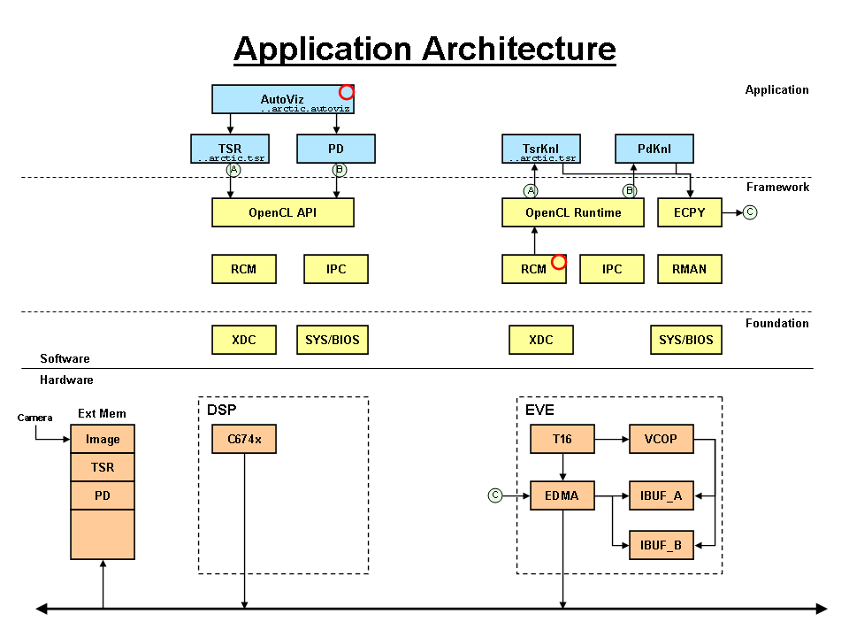

| package ti.sdo.opencl.examples.autoviz |
|
OpenCL launch pad example for the arctic device
This example is intended to be a launch pad for developing OpenCL
applications on the arctic devices. This example uses several packages
to reflect the application architecture. The 'prog' package is used
for building the actual executables.
[
more ... ]
package ti.sdo.opencl.examples.autoviz [1, 0, 0] {
}
DETAILS
This example is intended to be a launch pad for developing OpenCL
applications on the arctic devices. This example uses several packages
to reflect the application architecture. The 'prog' package is used
for building the actual executables.

generated on Wed, 22 Feb 2012 02:21:24 GMT